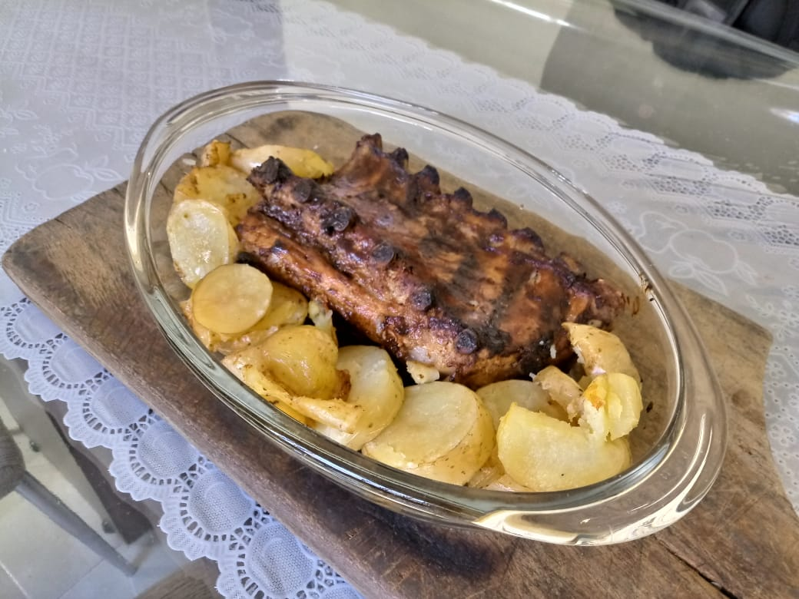

The roasted ribs to prove your manly

Here you will learn a easy way to roast ribs in oven and then you will be
able to impress your father in law, making he think that you know about meat and
fire, you know, male things. This way he will approve you as a suitable male for
his daughter.
But we know that you are not.
To prove your masculinity for a manlier man before you, you will need:
- Aluminum paper big enough to wrap the ribs
- A fatty pork ribs.
- 5-8 garlic cloves (it depends on the size of the ribs).
- Salt, the amount its on you, but you must be irreducible about the
certainty of it, even if get salty or tasteless. Doubt is for sissies.
- Black pepper, it is the same about salt, but here you must be careful,
cause you can't show that you are in pain if you put too much. Demonstrate
pain is for cry babies.
- Lemon, one is good, maybe two if it will be a big ribs
Yeah, just five ingredients, you can handle with that. I hope so.
Now, let's go to the hard part (and that was what she said).
The next part must be done at least 12 hours before you roast the ribs. Don't
ask why, you don't wanna know how to roast ribs, you wanna know how to impress a
man.
- In the side of the bones, make cuts between and along it.
- Take all the frustation with your job and use it to crush the garlic,
imagine your boss if it helps, smash it until became a paste (the garlic,
remember).
- Put the garlic, the salt and the pepper over the ribs, in both sides.
- Squeeze the lemon over the ribs, in both sides too.
- Wrap up the ribs with the aluminum paper as you would with a body. No
juice can spill. The soft part up.
- After 12 hours in fridge, put it on a baking tray and put in the oven.
518°F is good enough.
- After 1h, take it out the oven, turn the ribs upside down and put it
back.
- 30' after, open de aluminum paper and see if it seems like is roasted.
If it is, voilá. If don't, put it back in the oven with out the aluminum
paper and wait for 5-15 min. If you have any sauce, as barbecue, you can
grease it now.
Now, if you be confident enough, no one will have courage enough to criticize
your work. And even if you be capable to ruin this recipe and spoil a rib enough
to make someone say that it taste as the cry of a thousand children. You can look
him in the eyes and say: "you don't know how to appreciate haut cuisine, you
don't deserve this!" Then, throw away the ribs and leave the place.